Beide Trimmen
Werkzeugleiste / Symbol:

 Menü: Modifizieren - Beide Trimmen
Tastenkürzel: T, M
Kommandos: trim2 | extend2 | tm
Menü: Modifizieren - Beide Trimmen
Tastenkürzel: T, M
Kommandos: trim2 | extend2 | tm
Beschreibung:
Verkürzt oder verlängert zwei Linien, Kreisbögen oder Ellipsenbögen auf
einmal, so dass sie sich an ihrem Schnittpunkt treffen.
Vorgehensweise:
- Wählen Sie das erste Objekt, das zu einer Ecke getrimmt werden soll.
- Wählen Sie das zweite Objekt, das zu einer Ecke getrimmt werden soll.

- Klicken Sie die rechte Maustaste oder drücken Sie zweimal Escape um das
Werkzeug zu beenden.